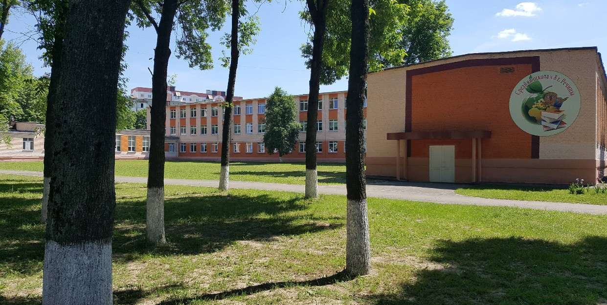

Предварительная запись на личный прием осуществляется по телефону 8 (02340) 9 64 68 (приемная).
Об учреждении

Основными задачами государственного учреждения образования «Средняя школа № 8 г. Речицы» являются:
Обеспечение эффективности образовательного процесса, безопасных условий пребывания учащихся в учреждении образования, укрепление дисциплины и правопорядка, достижение отношений сотрудничества, взаимоподдержки между всеми участниками образовательного процесса в целях обеспечения доступности и качества общего среднего образования, успешной социализации учащихся в динамичных условиях цифрового общества, подготовки к осознанному выбору профессии и продолжению образования на протяжении жизни.
Реализация воспитательного потенциала каждого учебного предмета, изучение и соблюдение законодательных актов Республики Беларусь для достижения учащимися личностных образовательных результатов, к которым относятся: сформированность нравственных ценностных ориентаций на основе принятых в обществе правил, норм поведения в интересах человека, семьи, нации и государства.
Ориентация на личность учащегося в целях наиболее полного раскрытия его способностей и удовлетворения его образовательных потребностей, создание условий для самореализации и самоопределения личности.
Укрепление материально-технической и учебно-методической базы учреждения образования для создания условий, соответствующих современным требованиям по обучению и воспитанию учащихся.